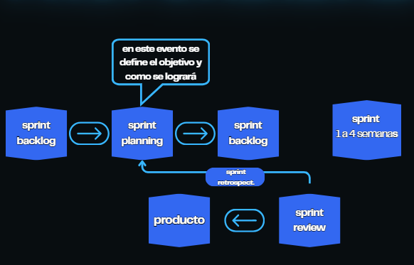

Product Owner
Maximiza el valor del producto. Define y ordena el Product Backlog, comunica el objetivo y ayuda a que el equipo trabaje primero en lo más importante.

Un marco de trabajo para crear valor mediante soluciones adaptativas a problemas complejos.

Cada Sprint crea una oportunidad para entregar, recibir feedback y mejorar la forma de trabajar.
Un equipo pequeño, multifuncional y autogestionado.
Maximiza el valor del producto. Define y ordena el Product Backlog, comunica el objetivo y ayuda a que el equipo trabaje primero en lo más importante.
Ayuda a que Scrum se entienda y aplique correctamente. Facilita la colaboración, acompaña al equipo y ayuda a eliminar impedimentos.
Son quienes crean el incremento. Planifican el trabajo del Sprint, cuidan la calidad y se organizan para alcanzar el objetivo acordado.
En este apartado se detallan las prácticas y actividades que constituyen la rutina de trabajo en scrum.
Es el núcleo fundamental de scrum, en torno al que se organizan todos los demás. A veces se llama también «iteración». Es el nombre que recibe cada etapa de trabajo con un objetivo concreto dentro del proyecto. La división del trabajo en sprints, que tienen una duración fija y constante (a esto se suele denominar timeboxing) permite mantener el ritmo de avance.
Marca el inicio de cada sprint. En ella se determina cuál es el objetivo de éste y las tareas necesarias para conseguirlo.
Breve reunión diaria en la que el equipo hace punto de situación para confirmar que se está avanzando al ritmo adecuado, o si hay algún impedimento detectarlo y actuar en consecuencia lo antes posible.
Análisis e inspección del «incremento» generado, y adaptación de la pila del producto si resulta necesario.
Reunión al finalizar el sprint en la que el equipo analiza aspectos operativos de su forma de trabajo y crea un plan de mejoras, para aplicarlo en la siguiente iteración.
Información transparente sobre el trabajo y el valor.
Lista emergente y ordenada de lo necesario para mejorar el producto. Su compromiso es el Product Goal.
Incluye el objetivo del Sprint, los elementos elegidos del Product Backlog y el plan de trabajo para entregar el incremento.
Resultado concreto y utilizable que cumple la Definition of Done y se integra con los incrementos anteriores.
Product Goal para el Product Backlog · Sprint Goal para el Sprint Backlog · Definition of Done para el Incremento.
Flujo continuo · mejora constante
La metodología Kanban es un sistema de gestión visual de procesos enfocado en controlar, optimizar y flexibilizar el flujo de trabajo en tiempo real, su objetivo fundamental no es solo organizar listas de pendientes, sino hacer visible el proceso productivo para identificar ineficiencias, eliminar desperdicios y entregar valor de forma constante.
El tablero Kanban es una herramienta visual de gestión de trabajo que permite dividir un proceso en 3 etapas (por hacer, en proceso, hecho) claras para controlar el flujo, evitar sobrecargas y optimizar tiempos.
en esta seccion se redactan las tareas pendientes en tarjetas individuales
cada tarjeta detalla el alcance, responsable y fecha de su tarea
Se ordenan verticalmente de mayor a menor prioridad
representa el trabajo activo. Incluye todas las tareas en las que alguien ya está trabajando en el momento presente
Un colaborador "jala" (pull) la tarjeta prioritaria de la columna "Por Hacer" cuando se libera de su tarea anterior
Si surge un problema, la tarjeta se marca de forma visual (por ejemplo, con una etiqueta roja) para pedir ayuda de inmediato
Esta columna representa el final del flujo de trabajo y reúne todas las tareas que han sido completadas con éxito
Las tarjetas se mueven automáticamente aquí cuando el producto, entrega o subactividad está 100% terminado
Sirve para calcular métricas clave del equipo, como el Lead Time y el Cycle Time